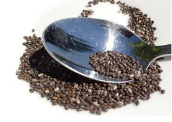

NOTICIAS
El boom de los “superfood” en Internet, ¿de qué se está hablando?
La alimentación es uno de los puntos principales a la hora de cuidar nuestro organismo y, como no podía ser de otra manera, la salud de los huesos también está directamente vinculada con lo que comemos.
Para mejorar el rendimiento deportivo, la memoria, el sistema inmune, el aspecto de la piel…, cada vez son más los alimentos que pasan a formar parte de la lista de los llamados superfood o superalimentos y cada vez están más presentes en las informaciones sobre alimentación que se publican en Internet. En este artículo, hacemos un análisis de lo que se está hablando.
De algunos ali mentos se destacan propiedades beneficiosas para la salud que no siempre están basadas en estudios científicos que las respalden, son los conocidos como superfood o superalimentos. Productos naturales que cuentan con gran cantidad de nutrientes y a los que se les atribuye la facultad de prevenir algunas enfermedades.
Sin embargo, más allá de que puedan tener una composición nutricional valiosa para nuestro organismo, no debemos olvidar que la base de una alimentación saludable reside en un consumo variado y equilibrado de frutas, verduras, cereales, pescados y carnes…A continuación, hemos recopilado algunas informaciones interesantes sobre este tema:
Algunos alimentos con “propiedades excepcionales”
En la web Superalimentos.es podemos encontrar un resumen de los más conocidos y sus facultades más destacadas: Superalimentos para una óptima salud.Desde que la Unión Europea autorizara la comercialización de semillas de Chía como “novel food ingredient” (pre-envasadas y siempre que indicase en el etiquetado un consumo máximo de 15 gr/día), su comercialización y consumo ha sido creciente en el viejo continente pero: ¿Por qué hay tanto interés por las semillas de Chía?. Si quieres conocer más puedes consultar el Reglamento (UE) 2015/2283 del Parlamento Europeo y del Consejo de 25 de noviembre de 2015 relativo a los nuevos alimentos.
En Elmundo.es hemos encontrado 10 ‘superalimentos’ que deberías incorporar a tu dieta si queremos mantener un buen aspecto. Del mismo modo, Elpais.com recoge Diecisiete alimentos poderosos.
A estas listas habría que añadir el biltong, una carne seca procedente de la cocina tradicional de Sudáfrica y que se ha empezado a comercializar con gran éxito en el país anglosajón. Nutricionalmente, el biltong es un superalimento con un importante contenido en proteínas. Aunque, según los británicos, El nuevo superalimento para 2016, es la morcilla.
Superalimentos para diabéticos
Entre los beneficios de los superalimentos podría estar la de mejorar la calidad de vida de los diabéticos. A través del consumo de alimentos con un índice glucémico bajo, que proporcionan nutrientes básicos como el calcio, potasio, fibra, magnesio, vitaminas A, C y E. Según aconseja la Asociación Americana de la Diabetes, estos 10 superalimentos podrían incluirlos los diabéticos en su dieta: Superalimentos frente a la diabetes, así informa infosalus.com.
La mirada crítica
Para la EUFIC (European Food Information Council), la idea de que existen alimentos que tienen extraordinarios beneficios para la salud resulta muy atractiva, pero, aunque en el campo científico se ha demostrado que determinados componentes presentes en algunos de estos alimentos y bebidas pueden suponer beneficios para la salud, “no es realista esperar que un pequeño conjunto de superalimentos vaya a aumentar significativamente nuestro bienestar”: Fundamentos científicos de los «superalimentos»: ¿realmente son «súper»?.
En esta línea, el artículo de Elpais.com Toda la verdad sobre los superalimentos, trata de establecer que hay de mito y realidad en este tipo de productos.
Del mismo modo, el recién estrenado programa Mitos de los alimentos de Antena3 tratará próximamente el tema, mediante pruebas realizadas con voluntarios y estudios médicos, para tratar de conocer algo más sobre cuáles son los beneficios reales que proporcionan los superfoods.
Nuestra aportación
Desde nuestra experiencia en este campo podemos acreditar los resultados que hemos obtenido en AINIA centro tecnológico con el proyecto Inmugal, gracias al que hemos conseguido, en colaboración con otros centros tecnológicos, desarrollar los primeros prototipos de alimentos saludables a partir de las microalgas Chlorella y Spirulina.
En concreto, hemos obtenido prototipo de Galletas y salsas que refuerzan el sistema inmunológico, a partir de microalgas.
Asimismo, hemos realizado la extracción de principios activos de semillas de Chía con fluidos supercríticos, una tecnología que nos permite obtener extractos de gran pureza.
Los superfood en la legislación alimentaria
En este sentido, aunque no existe una legislación específica que regule los superfood, recientemente se ha aprobado el nuevo Reglamento sobre novel food, que influye en los superalimentos en su consideración de alimentos de nuevo consumo en algunos mercados. Para el Jefe Departamento de Legislación de AINIA, José Mª Ferrer, “estamos ante un reglamento que trata de facilitar y mejorar las condiciones para que los nuevos alimentos procedentes de terceros países y que cuentan con un histórico de consumo en origen sean comercializados con mayor facilidad en el mercado de la UE”.
Según José María Ferrer, “el nuevo reglamento destaca por que aporta una mayor flexibilidad a los procedimientos, especialmente en aquellos casos en los que existe un uso tradicional de esos productos en sus países de origen. También acorta los tiempos en los que se podrán aprobar los nuevos alimentos para su comercialización”.
VOLVER